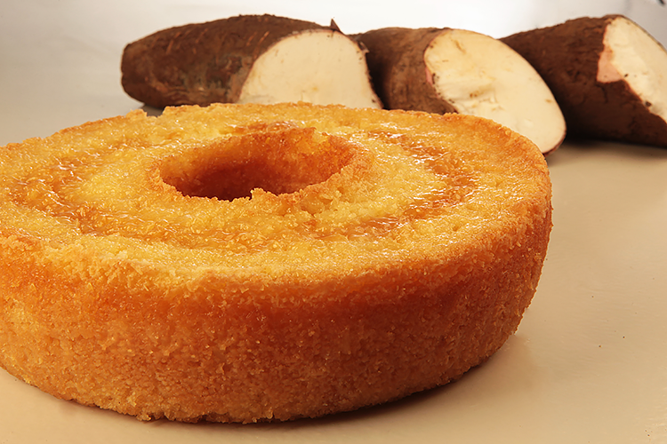

Cassava Cake

Lean how to make a traditional and delicious cassava cake
Cassava is the same as Yuka, booth are very consumed roots in Brazil, and it is used in a variety of recipes. Here you will learn a basic cassava cake recipe with coconut milk, in a traditional way, using uncooked grate cassava.
This super easy cassava cake is fluffy and humid, and it is going to surprise everybody. For more sweetness and flavour we will add some condensed milk, but you can add just sugar if you prefer. Give it a try!
Ingredients
- 500g cassava
- 2 tablespoons butter
- 2 eggs
- 1 cup all purpose flour
- 1 cup sugar
- 1/2 can of condensed milk
- 200ml coconut milk
Directions:
- Preheat the oven to 210C
- Grease and flour a medium-size bundt pan.
- Grate the cassava uncooked and let it stand a side.
- Added eggs in a bowl, sugar, and butter. Mix using a fouet until it is homogeneous.
- Add coconut milk, condensed milk and cassava to the same bowl, and mix it.
- Add the flour little by little and stir with a spoon.
- Pour into a lined baking dish and bake at 200°C for 40 minutes or until golden brown.
- Let stand until it is warm. Unmold the cake, and cut in slices. It is ready to serve.